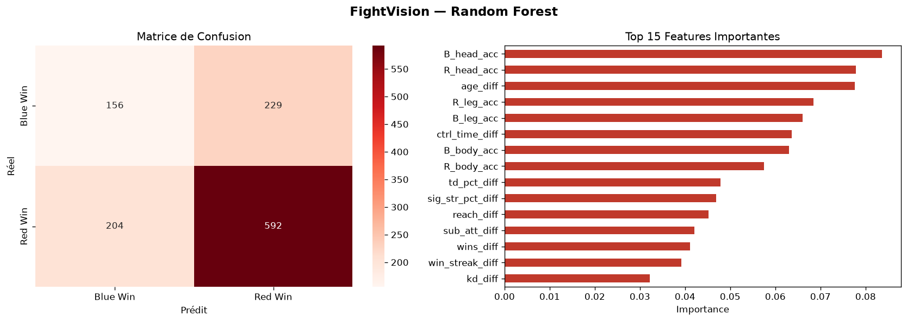
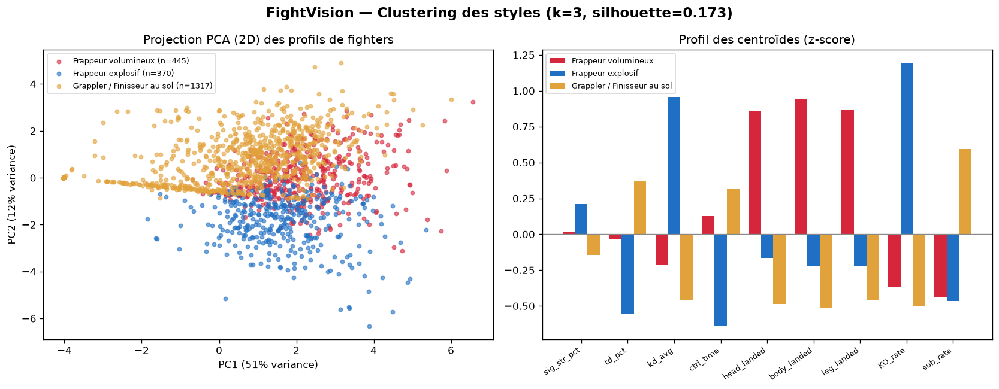
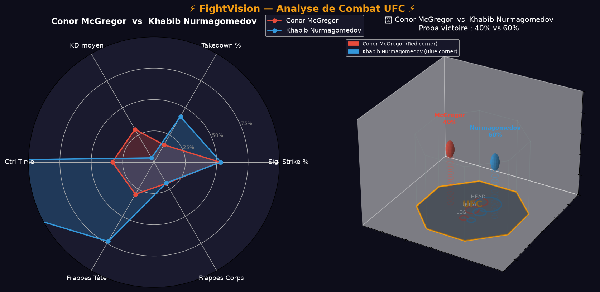

Machine learning entraîné sur 6 012 combats, clustering des styles de combat et octogone 3D interactif — pour lire un main event avec des chiffres, pas avec un pronostic.
Random Forest & Gradient Boosting entraînés sur 24 features différentielles — reach, âge, précision par zone (tête / corps / jambe), temps de contrôle — avec une augmentation par inversion de coin (R↔B) pour éliminer le biais du dataset vers le favori.
Le modèle ne regarde pas les noms — il regarde les écarts statistiques entre les deux profils. Voici les features qui pèsent le plus dans la décision finale :

K-Means sur 9 stats de style (précision de frappe par zone, takedown %, KD moyen, ctrl_time, taux de finition KO/soumission) — le nombre d'archétypes (3) n'est pas choisi à l'avance, il vient du meilleur silhouette score testé entre k=2 et k=6.
Taux de KO le plus haut (65.5%), KD moyen le plus élevé, le moins de temps passé en contrôle au sol — termine vite et debout.
Volume de frappes le plus haut sur les 3 zones (tête/corps/jambe), ctrl_time élevé — accumule plutôt que de chercher le finish.
Takedown % et ctrl_time les plus hauts, taux de soumission le plus élevé (37.3%) — contrôle puis termine au sol.

Exemple réel issu du dataset — chaque statistique est comparée pour isoler l'avantage décisif.
Résultat volontairement contre-intuitif : Khabib, archétype du wrestler, est classé "frappeur volumineux" — le clustering regarde le volume de frappes au sol (très élevé chez lui) et son faible taux de soumission en proportion de ses victoires, pas le takedown en tant que tel. C'est le genre de nuance qu'une étiquette commerciale écraserait.
Three.js rend l'octogone, les deux combattants et une heatmap des zones de frappe (tête / corps / jambe) — pivote la scène à la souris, directement dans l'application.

6 012 combats · 144 colonnes
24 features différentielles
Random Forest / Gradient Boosting
Archétypes de style de combat
Octogone interactif Three.js
Choisis deux combattants. Le reste est calculé.
Lancer FightVision